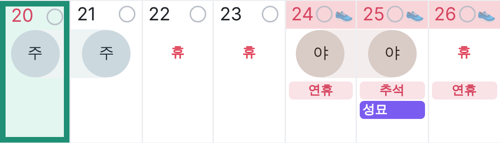
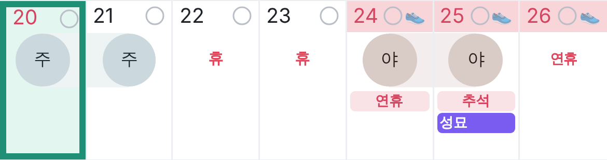
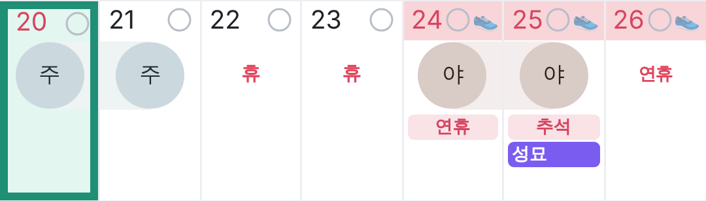
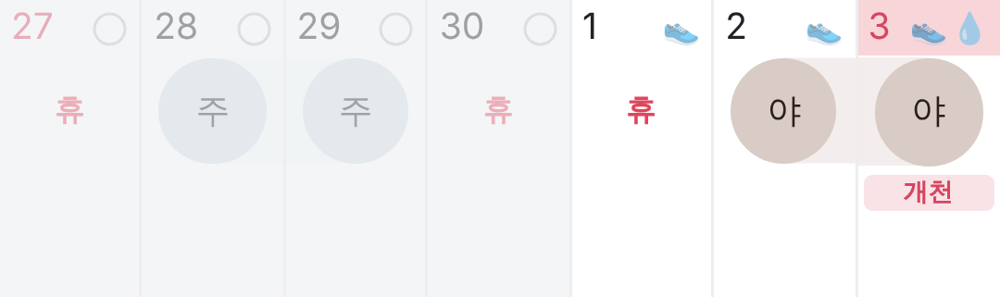

A. 이름을 아래 메모 자리로
날짜 줄은 그대로(분홍), 칸 아래 메모 자리 맨 위에 빨간 이름 줄 — 기념일과 같은 모양 · 근무 날 · 쉬는 날 똑같이
보통 폰작은 폰

작은 폰 10월날짜 줄은 그대로(분홍), 칸 아래 메모 자리 맨 위에 빨간 이름 줄 — 기념일과 같은 모양 · 근무 날 · 쉬는 날 똑같이

작은 폰 10월쉬는 날이면 가운데 빨간 "휴" 대신 "추석 · 개천"을 크게 (어차피 쉬는 날이라 뜻이 같음) · 근무하는 날만 A처럼 메모 자리에

작은 폰
작은 폰 10월